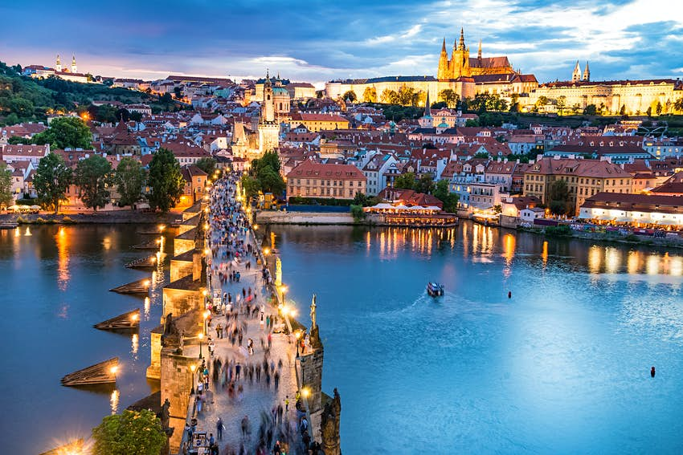

Places I Want to Visit in Europe

Barcelona
Barcelona (/ˌbɑːrsəˈloʊnə/ BAR-sə-LOH-nə, Catalan: [bəɾsəˈlonə], Spanish: [baɾθeˈlona]) is a city on the coast of northeastern Spain. It is the capital and largest city of the autonomous community of Catalonia, as well as the second most populous municipality of Spain. With a population of 1.6 million within city limits, its urban area extends to numerous neighbouring municipalities within the Province of Barcelona and is home to around 4.8 million people, making it the fifth most populous urban area in the European Union after Paris, the Ruhr area, Madrid, and Milan. It is one of the largest metropolises on the Mediterranean Sea, located on the coast between the mouths of the rivers Llobregat and Besòs, and bounded to the west by the Serra de Collserola mountain range, the tallest peak of which is 512 metres (1,680 feet) high.
Santorini
Santorini (Greek: Σαντορίνη, pronounced [sandoˈrini]), officially Thira (Greek: Θήρα [ˈθira]) and classic Greek Thera (English pronunciation /ˈθɪərə/), is an island in the southern Aegean Sea, about 200 km (120 mi) southeast from the Greek mainland. It is the largest island of a small, circular archipelago, which bears the same name and is the remnant of a volcanic caldera. It forms the southernmost member of the Cyclades group of islands, with an area of approximately 73 km2 (28 sq mi) and a 2011 census population of 15,550. The municipality of Santorini includes the inhabited islands of Santorini and Therasia, as well as the uninhabited islands of Nea Kameni, Palaia Kameni, Aspronisi and Christiana. The total land area is 90.623 km2 (34.990 sq mi). Santorini is part of the Thira regional unit.
Paris
.jpeg)
Paris (French pronunciation: [paʁi] (About this soundlisten)) is the capital and most populous city of France, with an estimated population of 2,175,601 residents as of 2018, in an area of more than 105 square kilometres (41 square miles). Since the 17th century, Paris has been one of Europe's major centres of finance, diplomacy, commerce, fashion, gastronomy, science, and arts. The City of Paris is the centre and seat of government of the region and province of Île-de-France, or Paris Region, which has an estimated population of 12,174,880, or about 18 percent of the population of France as of 2017. The Paris Region had a GDP of €709 billion ($808 billion) in 2017.According to the Economist Intelligence Unit Worldwide Cost of Living Survey in 2018, Paris was the second most expensive city in the world, after Singapore and ahead of Zürich, Hong Kong, Oslo, and Geneva. Another source ranked Paris as most expensive, on par with Singapore and Hong Kong, in 2018.
Prague
Prague (/prɑːɡ/ PRAHG; Czech: Praha [ˈpraɦa] (About this soundlisten); German: Prag; Latin: Praga) is the capital and largest city in the Czech Republic, the 13th largest city in the European Union[9] and the historical capital of Bohemia. Situated on the Vltava river, Prague is home to about 1.3 million people, while its metropolitan area is estimated to have a population of 2.7 million. The city has a temperate oceanic climate, with relatively warm summers and chilly winters.